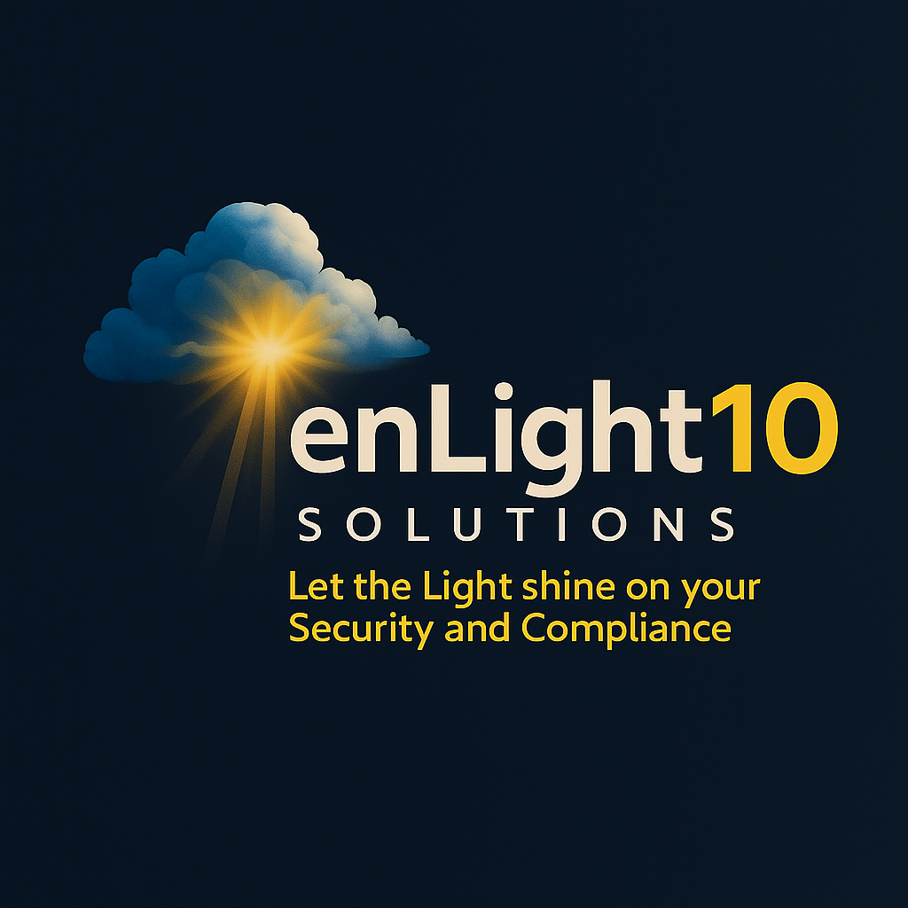

enLight10 Solutions
Let the Light shine on your Security and Compliance
Contact Us
🌟 Mission
To bring clarity and confidence to DoD contractors by unlocking the full security and compliance potential of Microsoft GCC High — through automation, Zero Trust, and AI-driven visibility.
🚀 Vision
A defense industrial base where every contractor — large or small — operates with the same level of compliance assurance and cyber resilience as the largest primes.
🔠Solution Suite
- enLight10 :: CUI Classifier — Custom Purview classifiers tied to the NARA CUI Registry & DoDI 5200.48, automated headers/footers, compliance dashboards.
- enLight10 :: SOC-as-a-Service — Azure Sentinel standup & tuning for GCC High, pre-built DoD/CMMC use cases, AI-assisted monitoring & triage.
- enLight10 :: Zero Trust Ready — Entra IAM policies, MFA, Conditional Access, PIM, device compliance enforcement.
- enLight10 :: Compliance Accelerator — Zero Trust maturity assessments, continuous evidence generation for CMMC/NIST audits, DoD Cyber Scorecard integration.
- enLight10 :: Contractor Solutions — Cleared IT and cybersecurity staff augmentation for DoD programs.
💡 Why enLight10?
DoD-Focused. Compliance-Driven. AI-Powered. Scalable. Mission-Aligned.
We shed light on CUI, Zero Trust, and Compliance for the Defense Industrial Base.